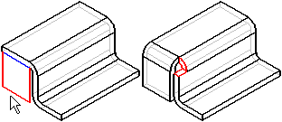
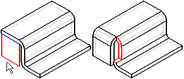
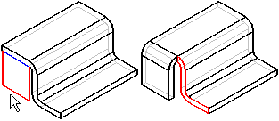

Bend Options dialog box
You can use the global default values, which are located on the Solid Edge Options dialog box, Flat Pattern Treatments page, or enter new values that apply to only this feature.
- Extend Profile
-
Extends the theoretical extents of the profile to the edges of the face so you can draw a profile line that does not extend to the edges of the face, and still construct the bend successfully.
- Flatten Bend
-
Flattens the bend after it is constructed. This option can be useful when constructing a sheet metal part by working backwards from an existing flat pattern drawing. This option is not available in the synchronous environment. This option is not available with the Jog command.
- Bend Radius
-
Specifies the bend radius value for the feature you are constructing.
- Use Default Value
-
Uses the default value specified on the Options dialog box.
- Override Global Value
-
Enables the associated value drop list so you can override the default value specified on the Gage tab of the Material Table dialog box.
- Bend Relief
-
Specifies that you want to apply bend relief to the source face from which the flange is constructed. When you set this option, you can also specify whether the bend relief is round or square. This option is not available in the synchronous environment.
- Extend Relief
-
Specifies that you want to apply bend relief to the entire face when set. When cleared, the bend relief is applied only to the material adjacent to the bend. This option is useful when the flange you are constructing is recessed between adjacent faces. This option is not available in the synchronous environment.
- Square
-
Specifies that the internal corners of the bend relief are to be square.
- Round
-
Specifies that the internal corners of the bend relief are to be round.
- Depth
-
Specifies the depth of the bend relief.
- Width
-
Specifies the width of the bend relief.
- Neutral Factor
-
Specifies the neutral factor for the bend.
- Corner Relief
-
Specifies that you want to apply corner relief to flanges that are adjacent to the flange you are constructing. When you set this option, you can also specify how you want the corner relief applied.
- Bend Only
-
Specifies that corner relief is only applied to the bend portion of the adjacent flanges.

- Bend and Face
-
Specifies that corner relief is applied to both the bend and face portions of the adjacent flanges.

- Bend and Face Chain
-
Specifies that corner relief is applied to the entire chain of bends and faces of the adjacent flanges.

- Save Default
-
Saves the current settings as the default. Saved defaults will be used the next time you use this command. If you do not save the current settings as defaults, the previous default settings will be used. This options is not available in the synchronous environment.
- Save Feature Default
-
Saves the current settings as the default. Saved defaults will be used the next time you use this command. If you do not save the current settings as defaults, the previous default settings will be used. This option is not available in the ordered environment.
How do I
Insert a bendEdit a bend radius
Apply relief to a bend bulge
Unbend a sheet metal part
Rebend a sheet metal part
Look up more details
Bend commandBend command bar
Bend command bar
Bend Options dialog box (editing bend radius)
Bend Bulge Relief command
Bend Bulge Relief command bar
Bulge Relief Options dialog box
Unbend command
Unbend command bar
Rebend command bar
Rebend command